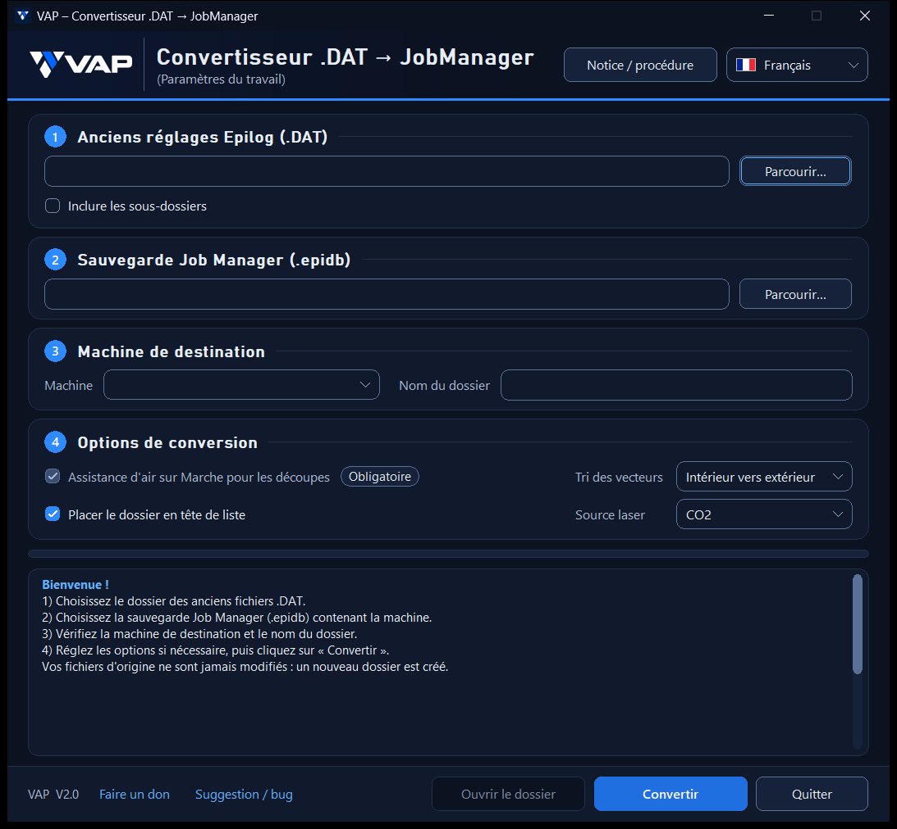

Converter interface

What’s new in V2.0
A new dark VAP interface, clearer steps, a colour-coded log and improved readability on smaller screens. Conversion settings and checks remain unchanged.
Features
- Select legacy DAT files, with an option to include subfolders
- Select a Job Manager backup
- Select the destination machine
- Configure conversion options
- Keep your original files unchanged
How to use
1. In Job Manager, create a database backup.
2. In the converter, select the folder containing your legacy DAT files.
3. Select the Job Manager backup and choose the destination machine.
4. Review the options, then start the conversion.
For the full procedure and precautions, also see the official software README ↗.
Independent software
This software is an independent VAP Technologie project and is not affiliated with Epilog Laser. All trademarks mentioned belong to their respective owners.